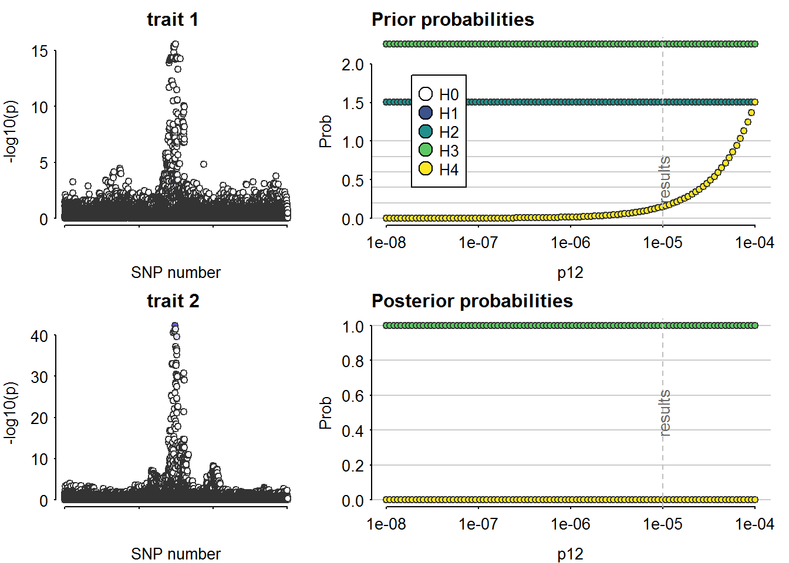

Last updated: 2022-11-05
Checks: 7 0
Knit directory: Rotaatio-2022/
This reproducible R Markdown analysis was created with workflowr (version 1.7.0). The Checks tab describes the reproducibility checks that were applied when the results were created. The Past versions tab lists the development history.
Great! Since the R Markdown file has been committed to the Git repository, you know the exact version of the code that produced these results.
Great job! The global environment was empty. Objects defined in the global environment can affect the analysis in your R Markdown file in unknown ways. For reproduciblity it’s best to always run the code in an empty environment.
The command set.seed(20220313) was run prior to running
the code in the R Markdown file. Setting a seed ensures that any results
that rely on randomness, e.g. subsampling or permutations, are
reproducible.
Great job! Recording the operating system, R version, and package versions is critical for reproducibility.
Nice! There were no cached chunks for this analysis, so you can be confident that you successfully produced the results during this run.
Great job! Using relative paths to the files within your workflowr project makes it easier to run your code on other machines.
Great! You are using Git for version control. Tracking code development and connecting the code version to the results is critical for reproducibility.
The results in this page were generated with repository version e86595d. See the Past versions tab to see a history of the changes made to the R Markdown and HTML files.
Note that you need to be careful to ensure that all relevant files for
the analysis have been committed to Git prior to generating the results
(you can use wflow_publish or
wflow_git_commit). workflowr only checks the R Markdown
file, but you know if there are other scripts or data files that it
depends on. Below is the status of the Git repository when the results
were generated:
Ignored files:
Ignored: .RData
Ignored: .Rhistory
Ignored: .Rproj.user/
Ignored: analyses/.Rhistory
Untracked files:
Untracked: .Rprofile
Untracked: .gitattributes
Untracked: .gitignore
Untracked: CRP.Rmd
Untracked: Functional_variants.pdf
Untracked: IL2RB.Rmd
Untracked: IL6R.Rmd
Untracked: IL6ST.Rmd
Untracked: MONDO_0005147-known-drugs.tsv
Untracked: MR-articles-pubmed.csv
Untracked: Mimicking-randomized-controlled-trials-with-genome-wide-data-to-ritta.pptx
Untracked: Mimicking-randomized-controlled-trials-with-genome-wide-data.pptx
Untracked: README.md
Untracked: README.txt
Untracked: TNF.Rmd
Untracked: _workflowr.yml
Untracked: analyses/_site.yml
Untracked: analyses/about.Rmd
Untracked: analyses/index.Rmd
Untracked: analyses/license.Rmd
Untracked: articles/
Untracked: code/
Untracked: data/
Untracked: figures/
Untracked: guidelines-for-review-of-MR-studies-20177.pdf
Untracked: ld_finnge.zip
Untracked: mendelian randomization.Rproj
Untracked: output/
Unstaged changes:
Deleted: analyses/IL6R.Rmd
Note that any generated files, e.g. HTML, png, CSS, etc., are not included in this status report because it is ok for generated content to have uncommitted changes.
These are the previous versions of the repository in which changes were
made to the R Markdown (analyses/IL2RA.Rmd) and HTML
(docs/IL2RA.html) files. If you’ve configured a remote Git
repository (see ?wflow_git_remote), click on the hyperlinks
in the table below to view the files as they were in that past version.
| File | Version | Author | Date | Message |
|---|---|---|---|---|
| Rmd | e86595d | Jaakko Koskenniemi | 2022-11-05 | wflow_publish(c("analyses/CRP.Rmd", "analyses/CXCL10.Rmd", "analyses/IL2RA.Rmd", |
Load packages
library(tidyverse)-- Attaching packages --------------------------------------- tidyverse 1.3.1 --v ggplot2 3.3.6 v purrr 0.3.4
v tibble 3.1.7 v dplyr 1.0.9
v tidyr 1.2.0 v stringr 1.4.0
v readr 2.1.2 v forcats 0.5.1-- Conflicts ------------------------------------------ tidyverse_conflicts() --
x dplyr::filter() masks stats::filter()
x dplyr::lag() masks stats::lag()library(ggpubr)
library(data.table)
Attaching package: 'data.table'The following objects are masked from 'package:dplyr':
between, first, lastThe following object is masked from 'package:purrr':
transposelibrary(coloc)This is a new update to coloc.library(TwoSampleMR)TwoSampleMR version 0.5.6
[>] New: Option to use non-European LD reference panels for clumping etc
[>] Some studies temporarily quarantined to verify effect allele
[>] See news(package='TwoSampleMR') and https://gwas.mrcieu.ac.uk for further detailslibrary(ieugwasr)API: public: http://gwas-api.mrcieu.ac.uk/
Attaching package: 'ieugwasr'The following object is masked from 'package:TwoSampleMR':
ld_matrixGWAS sumstat of type 1 diabetes was obtained from the study by Chiou et al. (Nature 2021, https://doi.org/10.1038/s41586-021-03552-w). GWAS sumstat for protein levels of IL2RA was obtained from the study by Ferkingstad et al. (Nature 2021, https://doi.org/10.1038/s41588-021-00978-w). In terms of IL2RA, variants within 1,000,000 bases before the start site and 1,000,000 after the stop site are included.
IL2RA_gwas <- readRDS("data/sumstats/cisdata/IL2RA_gwas_data.rds") %>% as_tibble()
IL2RA_T1D <- readRDS("data/sumstats/cisdata/IL2RA_T1D_data_harm.rds") %>% as_tibble()
IL2RA_anno <- readRDS("data/sumstats/cisdata/IL2RA_anno_data.rds") %>% as_tibble()Ferkingstad et al. state in their README file
Note that in the summary statistics files, the effectAllele is not always the minor allele, and therefore the ImpMAF is not always the frequency of the effect allele (it may be the frequency of the other allele). We now provide an Extra annotation file (assocvariants.annotated.txt.gz) that also includes the effect allele frequency – This file can be mapped to the other files using the “Name” column. Also, the summary statistics files sometimes incorrectly have effectAllele=otherAllele for multiallelic variants. In these cases the effectAllele is correct, but the otherAllele should be ‘!’, meaning that the effectAllele is tested against the other (two or more) alleles (using the ‘!’ sign as shorthand for ‘not effectAllele’). This has been corrected in the file Extra annotation file (assocvariants.annotated.txt.gz).
Finally, a subset of the variants in the summary statistics files should be excluded due to quality issues. These variants are listed in a separate Excluded variants file (assocvariants.excluded.txt.gz). The Extra annotation file (assocvariants.annotated.txt.gz) does not include these variants.
#merge data (exclude those observations that are missing in anno)
IL2RA_gwas <- right_join(IL2RA_gwas, IL2RA_anno, by = "Name")
rm(IL2RA_anno)All cases where the variables in the two data files (annotation and original sumstat of Ferkingstad) are either instances when - rsid has not been assigned (and the original sumstat has NA and the annotation “.”) - multiallelic allele, where the other allele is annotated with a “!”
We decided to remove the multiallelic SNPs anyway, and after them, the columns were identical (equal and not discordant in terms of missing observations).
#Remove multiallelic snps and recode rsid "." to NA
IL2RA_gwas <- IL2RA_gwas %>%
mutate(rsids.y = replace(rsids.y, rsids.y == ".", NA)) %>%
filter(otherAllele.y != "!")
#Check that chrom, pos, rsids, effectAllele and otherAllele dont disagree between files
IL2RA_gwas %>%
filter(Chrom.x != Chrom.y | (!is.na(Chrom.x) & is.na(Chrom.y)) | (!is.na(Chrom.y) & is.na(Chrom.x)) |
Pos.x != Pos.y | (!is.na(Pos.x) & is.na(Pos.y)) | (!is.na(Pos.y) & is.na(Pos.x)) |
rsids.x != rsids.y | (!is.na(rsids.x) & is.na(rsids.y)) | (!is.na(rsids.y) & is.na(rsids.x)) |
effectAllele.x != effectAllele.y | (!is.na(effectAllele.x) & is.na(effectAllele.y)) | (!is.na(effectAllele.y) & is.na(effectAllele.x))|
otherAllele.x != otherAllele.y | (!is.na(otherAllele.x) & is.na(otherAllele.y)) | (!is.na(otherAllele.y) & is.na(otherAllele.x)))# A tibble: 0 x 18
# ... with 18 variables: Chrom.x <chr>, Pos.x <int>, Name <chr>, rsids.x <chr>,
# effectAllele.x <chr>, otherAllele.x <chr>, Beta <dbl>, Pval <dbl>,
# minus_log10_pval <dbl>, SE <dbl>, N <int>, ImpMAF <dbl>, Chrom.y <chr>,
# Pos.y <int>, rsids.y <chr>, effectAllele.y <chr>, otherAllele.y <chr>,
# effectAlleleFreq <dbl>
# i Use `colnames()` to see all variable names#NoneThus, only those values variables with .x in their name are preserved. Here, we also remove the remaining multiallelic SNPs (where effect allele equals the other allele.)
IL2RA_gwas <- IL2RA_gwas %>%
select(!ends_with(".y")) #remove column names *.y
IL2RA_gwas <- IL2RA_gwas %>%
rename_with(~gsub(".x", "", .x, fixed = TRUE)) #remove ".x" from variable names
#Remove the other version of the coding of multiallelic variants
IL2RA_gwas <- IL2RA_gwas %>%
filter(effectAllele != otherAllele)Please note that the GWAS sumstat of type 1 diabetes has been harmonized by GWAS catalog, but the GWAS sumstat for serum IL2RA levels has not been harmonized.
#Rename IL2RA variables
IL2RA_gwas <- IL2RA_gwas %>%
rename(rsid = rsids,
EA_prot = effectAllele, NEA_prot = otherAllele,
EAF_prot=effectAlleleFreq, BETA_prot=Beta,
p_prot = Pval,
minus_log10_p_prot = minus_log10_pval,
SE_prot = SE, N_prot = N, ImpMAF_prot = ImpMAF, variant_id_prot = Name)
#What is the difference between position and base_pair_location?
IL2RA_T1D %>%
filter(pos != base_pair_location) %>%
select(chr, rsid, pos, base_pair_location) %>%
print(n=200) # A tibble: 0 x 4
# ... with 4 variables: chr <chr>, rsid <chr>, pos <int>,
# base_pair_location <int>
# i Use `colnames()` to see all variable names#none
IL2RA_T1D <- IL2RA_T1D %>% select(-base_pair_location)
IL2RA_T1D <- IL2RA_T1D %>%
rename(p_T1D = pval, Pos_T1D=pos,
EA_T1D=effectAllele, NEA_T1D=otherAllele, BETA_T1D=beta,
EAF_T1D=EAF, SE_T1D=SE, variant_id_T1D = id)
#Harmonize variant ID variable names
IL2RA <- inner_join(IL2RA_gwas, IL2RA_T1D, by = "rsid")
IL2RA %>%
select(rsid, variant_id_prot, variant_id_T1D) %>%
filter(variant_id_prot != variant_id_T1D)# A tibble: 15,102 x 3
rsid variant_id_prot variant_id_T1D
<chr> <chr> <chr>
1 rs72472173 chr10:5052673:T:C 10_5052673_C_T
2 rs4881383 chr10:5052676:C:T 10_5052676_T_C
3 rs782470793 chr10:5052711:C:G 10_5052711_G_C
4 rs149376616 chr10:5052797:A:G 10_5052797_G_A
5 rs183726758 chr10:5052974:T:C 10_5052974_C_T
6 rs184932874 chr10:5053148:T:C 10_5053148_C_T
7 rs2186176 chr10:5053166:C:G 10_5053166_G_C
8 rs113793757 chr10:5053310:T:C 10_5053310_C_T
9 rs10904403 chr10:5053355:T:C 10_5053355_C_T
10 rs181979760 chr10:5053387:T:C 10_5053387_C_T
# ... with 15,092 more rows
# i Use `print(n = ...)` to see more rowsIL2RA_gwas <- IL2RA_gwas %>%
mutate(variant_id_prot = str_replace(variant_id_prot, "chr", "")) %>%
mutate(variant_id_prot = str_replace(variant_id_prot, ":", "_")) %>%
mutate(variant_id_prot = str_replace(variant_id_prot, ":", "_")) %>%
mutate(variant_id_prot = str_replace(variant_id_prot, ":", "_"))
#Remove those variants where there are several rsids
IL2RA_gwas <- IL2RA_gwas %>% filter(!str_detect(rsid, ","))
IL2RA_gwas %>% filter(is.na(rsid))# A tibble: 0 x 13
# ... with 13 variables: Chrom <chr>, Pos <int>, variant_id_prot <chr>,
# rsid <chr>, EA_prot <chr>, NEA_prot <chr>, BETA_prot <dbl>, p_prot <dbl>,
# minus_log10_p_prot <dbl>, SE_prot <dbl>, N_prot <int>, ImpMAF_prot <dbl>,
# EAF_prot <dbl>
# i Use `colnames()` to see all variable namesIL2RA_T1D %>% filter(is.na(rsid))# A tibble: 0 x 11
# ... with 11 variables: chr <chr>, Pos_T1D <int>, variant_id_T1D <chr>,
# rsid <chr>, EA_T1D <chr>, NEA_T1D <chr>, BETA_T1D <dbl>, SE_T1D <dbl>,
# p_T1D <chr>, EAF_T1D <dbl>, chromosome <chr>
# i Use `colnames()` to see all variable names#merge the data
IL2RA <- inner_join(IL2RA_gwas, IL2RA_T1D, by = "rsid")#create Manhattan plots with vertical lines indicating the selected area (see below 2.4)
IL2RA_prot.fig <-
IL2RA %>%
ggplot(aes(x = Pos/1000, y=minus_log10_p_prot)) +
geom_point()+
geom_hline(yintercept=8, linetype="dashed")+
geom_vline(xintercept=5.75e6/1000, linetype="dashed")+
geom_vline(xintercept=6.5e6/1000, linetype="dashed")+
ggtitle("GWAS of serum IL2RA levels")+
xlab(NULL)
IL2RA_T1D.fig <-
IL2RA %>%
mutate(minus_log10_p_T1D = -log10(as.numeric(p_T1D))) %>%
ggplot()+
geom_point(mapping=aes(x = Pos_T1D/1000, y=minus_log10_p_T1D))+
geom_hline(yintercept=8, linetype="dashed")+
geom_vline(xintercept=5.75e6/1000, linetype="dashed")+
geom_vline(xintercept=6.5e6/1000, linetype="dashed")+
ggtitle("GWAS of type 1 diabetes")+
xlab("Position(kbp)")
layer_scales(IL2RA_prot.fig)$x$range$range[1] 5052.673 7104.244IL2RA_gene.fig <-
ggplot(data = IL2RA) +
geom_blank() +
geom_segment(x= 6052.652, xend=6104.288, y=1, yend=1, size = 2) +
annotate("text", label = "IL2RA", x= (6052.652 + 6104.288) / 2, y=1, hjust = 0.5, vjust = -1) +
xlim(5052.67, 7104.244) +
ylim(0.75, 2) +
ylab(NULL) + xlab(NULL) +
theme(axis.text.y = element_blank(), axis.ticks.y = element_blank(),
panel.grid.major.y = element_blank(),
panel.grid.minor.y = element_blank())
# Arrange figures
ggarrange(IL2RA_gene.fig, IL2RA_prot.fig,IL2RA_T1D.fig,
heights = c(1, 3, 3), nrow = 3,
ncol = 1, align = "hv")
ggsave("figures/IL2RA-manhattan-combined-fig.pdf", height = 8, width = 6, units = "in")#select the area containing significant SNPs
IL2RA <- IL2RA %>%
filter(Pos > 5.75e6 & Pos < 6.5e6)
#Change MAF to numeric
IL2RA <- IL2RA %>%
mutate(EAF_T1D = as.numeric(EAF_T1D)) %>%
mutate(EAF_prot = as.numeric(EAF_prot)) %>%
mutate(MAF_T1D = ifelse(EAF_T1D > 0.5, 1 - EAF_T1D, EAF_T1D)) %>%
mutate(MAF_prot = ifelse(EAF_prot > 0.5, 1 - EAF_prot, EAF_prot))
#Calculate MAF
IL2RA <- IL2RA %>%
mutate(MAF_T1D = ifelse(EAF_T1D > 0.5, 1 - EAF_T1D, EAF_T1D)) %>%
mutate(MAF_prot = ifelse(EAF_prot > 0.5, 1 - EAF_prot, EAF_prot))
#remove the SNPs with MAF= 0
IL2RA <- IL2RA %>%
filter(MAF_T1D != 0) %>%
filter(MAF_prot != 0)
#Remove duplicated SNPS
rsid_dupl <- IL2RA %>%
filter(duplicated(rsid)) %>% pull(rsid)
IL2RA <- IL2RA %>% filter(!(rsid %in% rsid_dupl))
D1 <- list(
type = "quant", # quantitative trait
beta = IL2RA$BETA_prot,
varbeta = IL2RA$SE_prot^2,
pvalues = IL2RA$p_prot,
N = IL2RA$N_prot,
MAF = as.numeric(IL2RA$MAF_prot),
position = IL2RA$Pos,
snp = IL2RA$rsid,
sdY = 1)
D2 <- list(
type = "cc", # case-control trait
beta = IL2RA$BETA_T1D,
varbeta = IL2RA$SE_T1D^2,
pvalues = IL2RA$p_T1D,
N = 18942+501638, # Case-control study (Chiou et al. 2021 Nature)
s = 18942/(18942+501638), # N_case/(N_case+ N_ctrl)
MAF = as.numeric(IL2RA$MAF_T1D),
position = IL2RA$Pos,
snp = IL2RA$rsid)
coloc_results_IL2RA <- coloc.abf(D1, D2, p1 = 1e-4, p2 = 1e-4, p12 = 1e-5)PP.H0.abf PP.H1.abf PP.H2.abf PP.H3.abf PP.H4.abf
2.28e-46 2.27e-36 1.00e-10 1.00e+00 1.46e-12
[1] "PP abf for shared variant: 1.46e-10%"coloc_results_IL2RA$results %>%
tibble() %>%
arrange(SNP.PP.H4)# A tibble: 5,249 x 12
snp posit~1 V.df1 z.df1 r.df1 lABF.~2 V.df2 z.df2 r.df2 lABF.~3
<chr> <int> <dbl> <dbl> <dbl> <dbl> <dbl> <dbl> <dbl> <dbl>
1 rs4750531 6492422 3.13e-5 0.0179 0.999 -3.29 1.95e-4 0.235 0.995 -2.64
2 rs2026432 6465641 6.12e-5 0.141 0.997 -2.95 2.05e-4 0.0556 0.995 -2.64
3 rs3858254 6476543 5.99e-5 0.0388 0.997 -2.96 2.16e-4 -0.138 0.995 -2.60
4 rs2296123 6456837 6.51e-5 -0.0867 0.997 -2.92 2.07e-4 -0.104 0.995 -2.63
5 rs648778 6492630 6.47e-5 0.211 0.997 -2.90 2.15e-4 0.0438 0.995 -2.61
6 rs109063~ 6369109 6.14e-5 -0.115 0.997 -2.95 2.25e-4 0.206 0.994 -2.57
7 rs584820 6440857 6.38e-5 0.163 0.997 -2.92 2.08e-4 0.278 0.995 -2.59
8 rs634492 6493470 6.68e-5 0.196 0.997 -2.89 2.15e-4 0.0175 0.995 -2.62
9 rs620736 6494346 6.83e-5 0.194 0.997 -2.88 2.17e-4 0.0757 0.995 -2.61
10 rs650652 6498761 6.49e-5 0.199 0.997 -2.91 2.12e-4 -0.299 0.995 -2.58
# ... with 5,239 more rows, 2 more variables: internal.sum.lABF <dbl>,
# SNP.PP.H4 <dbl>, and abbreviated variable names 1: position, 2: lABF.df1,
# 3: lABF.df2
# i Use `print(n = ...)` to see more rows, and `colnames()` to see all variable namessensitivity(coloc_results_IL2RA, "H4 > 0.7")Results fail decision rule H4 > 0.7#
# ldmat_IL2RA <- ld_matrix_local(
# IL2RA$rsid,
# plink_bin = genetics.binaRies::get_plink_binary(),
# bfile = "C:/Users/jajoko/Documents/MR Projects/plinkref/EUR")
#
# str(ldmat_IL2RA)
# ldmat_IL2RA[,1]
#
# #In LD-mat the rsids are followed by reference and effect alleles (e.g. rs10905492_G_A). The effect alleles have to be harmonized between the LD matrix and data. The data is changed to follow ld matrix, because that is easier to do than vice versa.
#
# #Extract rsid, non-effect allele and effect allele from LD-matrix
# snps <- data.frame(rsid_nea_ea = rownames(ldmat_IL2RA))
# snps <- snps %>%
# mutate(nea_ea = str_sub(rsid_nea_ea, -4,-1))
#
# #Check that names in LD-matrix do not include indels (eg. G to CT)
# snps %>% mutate(underscore = str_sub(nea_ea, 1, 1)) %>%
# filter(underscore != "_") #all have _ as the fourth last character, indicating that they are indeed single nucleotides
#
# #Extract ea, nea, and rsid
# snps <- snps %>%
# mutate(nea = str_sub(nea_ea, 2,2), ea = str_sub(nea_ea, 4,4)) %>%
# mutate(rsid = str_sub(rsid_nea_ea, 1, -5))
#
#
# #prepare for merge
# snps <- snps %>%
# select(-nea_ea) %>%
# rename(nea_ldmat = nea, ea_ldmat = ea, rsid_ldmat = rsid_nea_ea, rsids = rsid)
#
# #Merge
# IL2RA_T1D_merged_ldsnps <-
# left_join(snps, IL2RA_T1D_merged, by = "rsids")
#
# #check for alignment
# IL2RA_T1D_merged_ldsnps %>%
# filter(ea_ldmat != NEA_T1D_aligned) %>% nrow()
#
# IL2RA_T1D_merged_ldsnps %>%
# filter(ea_ldmat == NEA_T1D_aligned) %>% nrow()
#
# IL2RA_T1D_merged_ldsnps
#
#
# #ongelma: kuinka saada ld-matriisin snp:t samaan muotoon kuin IL2RA-datan??
#
#
# D1 <- list(
# type = "quant", # quantitative trait
# beta = IL2RA_T1D_merged_onlymat$BETA_prot_aligned,
# varbeta = IL2RA_T1D_merged_onlymat$SE_prot^2,
# pvalues = IL2RA_T1D_merged_onlymat$p_prot,
# N = IL2RA_T1D_merged_onlymat$N_prot,
# MAF = as.numeric(IL2RA_T1D_merged_onlymat$MAF_prot),
# snp = IL2RA_T1D_merged_onlymat$rsid,
# LD = ldmat_IL2RA,
# sdY = 1)
#
# D2 <- list(
# type = "cc", # case-control trait
# beta = IL2RA_T1D_merged_onlymat$BETA_T1D_aligned,
# varbeta = IL2RA_T1D_merged_onlymat$SE_T1D^2,
# pvalues = IL2RA_T1D_merged_onlymat$p_T1D,
# N = IL2RA_T1D_merged_onlymat$N_T1D, # Case-control study (Chiou et al. 2021 Nature)
# s = 18942/(18942+501638), # N_case/(N_case+ N_ctrl)
# MAF = as.numeric(IL2RA_T1D_merged_onlymat$MAF_T1D),
# LD = ldmat_IL2RA,
# snp = IL2RA_T1D_merged_onlymat$rsid)
#
# check_alignment(D1)
sessionInfo()R version 4.2.1 (2022-06-23 ucrt)
Platform: x86_64-w64-mingw32/x64 (64-bit)
Running under: Windows 10 x64 (build 14393)
Matrix products: default
locale:
[1] LC_COLLATE=Finnish_Finland.1252 LC_CTYPE=Finnish_Finland.1252
[3] LC_MONETARY=Finnish_Finland.1252 LC_NUMERIC=C
[5] LC_TIME=Finnish_Finland.1252
attached base packages:
[1] stats graphics grDevices utils datasets methods base
other attached packages:
[1] ieugwasr_0.1.5 TwoSampleMR_0.5.6 coloc_5.1.0.1 data.table_1.14.2
[5] ggpubr_0.4.0 forcats_0.5.1 stringr_1.4.0 dplyr_1.0.9
[9] purrr_0.3.4 readr_2.1.2 tidyr_1.2.0 tibble_3.1.7
[13] ggplot2_3.3.6 tidyverse_1.3.1 workflowr_1.7.0
loaded via a namespace (and not attached):
[1] matrixStats_0.62.0 fs_1.5.2 lubridate_1.8.0 httr_1.4.3
[5] rprojroot_2.0.3 tools_4.2.1 backports_1.4.1 bslib_0.4.0
[9] utf8_1.2.2 R6_2.5.1 irlba_2.3.5 nortest_1.0-4
[13] DBI_1.1.3 colorspace_2.0-3 withr_2.5.0 gridExtra_2.3
[17] tidyselect_1.1.2 processx_3.6.1 compiler_4.2.1 git2r_0.30.1
[21] glmnet_4.1-4 cli_3.3.0 rvest_1.0.2 xml2_1.3.3
[25] labeling_0.4.2 sass_0.4.2 scales_1.2.0 callr_3.7.1
[29] mixsqp_0.3-43 digest_0.6.29 rmarkdown_2.14 pkgconfig_2.0.3
[33] htmltools_0.5.2 mr.raps_0.2 highr_0.9 dbplyr_2.2.1
[37] fastmap_1.1.0 rlang_1.0.3 readxl_1.4.0 susieR_0.12.16
[41] rstudioapi_0.13 farver_2.1.1 shape_1.4.6 jquerylib_0.1.4
[45] generics_0.1.3 jsonlite_1.8.0 car_3.1-0 magrittr_2.0.3
[49] Matrix_1.4-1 Rcpp_1.0.8.3 munsell_0.5.0 fansi_1.0.3
[53] abind_1.4-5 viridis_0.6.2 lifecycle_1.0.1 stringi_1.7.6
[57] whisker_0.4 yaml_2.3.5 carData_3.0-5 plyr_1.8.7
[61] grid_4.2.1 promises_1.2.0.1 crayon_1.5.1 lattice_0.20-45
[65] cowplot_1.1.1 splines_4.2.1 haven_2.5.0 hms_1.1.1
[69] knitr_1.39 ps_1.7.1 pillar_1.8.0 ggsignif_0.6.3
[73] codetools_0.2-18 reprex_2.0.1 glue_1.6.2 evaluate_0.15
[77] getPass_0.2-2 modelr_0.1.8 foreach_1.5.2 vctrs_0.4.1
[81] tzdb_0.3.0 httpuv_1.6.5 cellranger_1.1.0 gtable_0.3.0
[85] reshape_0.8.9 assertthat_0.2.1 cachem_1.0.6 xfun_0.31
[89] broom_1.0.0 rstatix_0.7.0 later_1.3.0 survival_3.3-1
[93] viridisLite_0.4.0 iterators_1.0.14 ellipsis_0.3.2